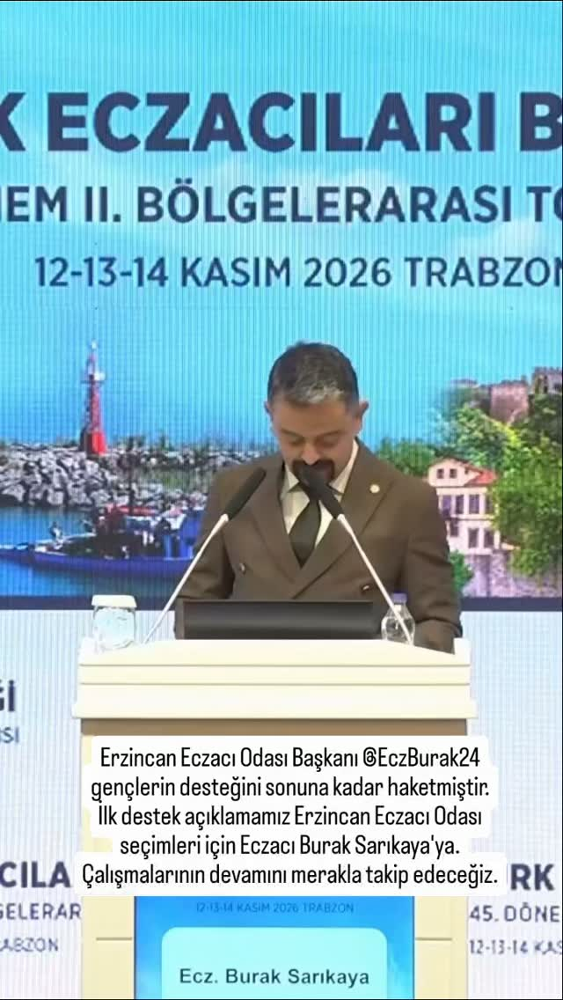
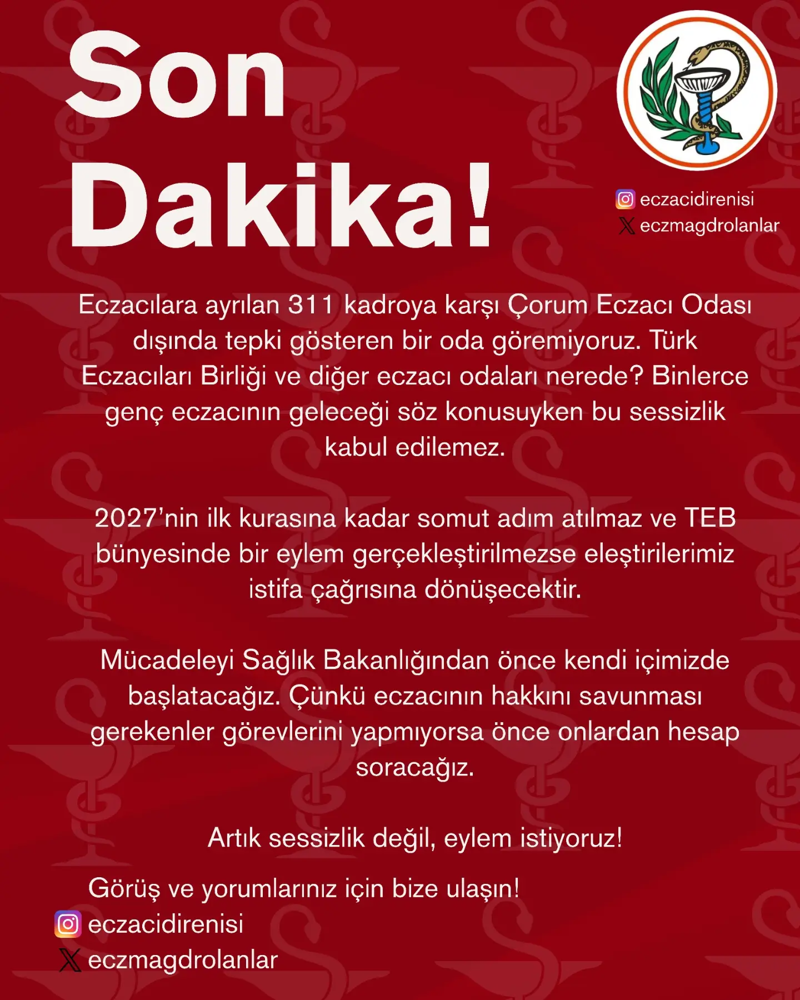

Oda, TEB ve seçimler
Eczacı odaları, Türk Eczacıları Birliği ve seçim süreçleri.
35 paylaşımİlk paylaşım 19 Aralık 20254.375 toplam beğeni
Zaman çizelgesi

Erzincan Eczacı Odası Başkanı @EczBurak24 gençlerin desteğini sonuna kadar haketmiştir.
İlk destek açıklamamız Erzincan Eczacı Odası seçimleri için Eczacı Burak Sarıkaya'ya. Çalışmalarının devamını merakla takip edeceğiz.

1. önceliğiniz eczane kârlılığı…
4. maddede sıra Genç eczacılarda. Biz artık size söyleyecek bir şey bulamıyoruz. Ancak şunu unutmayın: Atatürk'ümüzün de dediği gibi, “Bütün ümidim gençliktedir.” Bizim de bütün ümidimiz genç…

Uzm.Ecz.Ahmet Nezihi PEKCAN
Uzm. Ecz. Ahmet Nezihi Pekcan 22.07.1961 Ankara doğumludur. 1977 yılında Gazi Üniversitesi Eczacılık Fakültesi’nde yüksek öğrenime başladı. 1981 yılında mezun olup Konya’da Pekcan Eczanesi mesul…
TEB Bölgelerarası Toplantısı Trabzon’da gerçekleştirilecek.
Emin olduğumuz tek bir şey var: Gençlerin yine konuşulmayacağı… Ancak bu kez hak veriyoruz. Çünkü gıda takviyesi meselesinin zincir eczane tartışmasına bağlanacağını kendileri de beklemiyordu.…
Mesleklerin kaymağını sıyıranlar, gençler için olumlu sonuçlar doğurabilecek bir yasa…
Mesleklerin kaymağını sıyıranlar, gençler için olumlu sonuçlar doğurabilecek bir yasa tasarısını gençlerin hayatını daha da zorlaştıracak hâle getirip yine aynı şekilde “dostlar alışverişte görsün”…
Konu: Cumartesi Günleri Eczanelerde Nöbet Sistemine Geçilmesi Talebi
İl: ………………… İlçe: ………………… İlimizde cumartesi günleri eczanelerin normal çalışma düzeninde hizmet vermesi yerine, nöbet sistemine geçilmesini talep ediyorum. Birçok ilde cumartesi günleri…
TEB BAŞKANININ TEK MESUL BİZ DEĞİLİZ AÇIKLAMALARINA genç eczacılardan tepki yağıyor.
TEB BAŞKANININ TEK MESUL BİZ DEĞİLİZ AÇIKLAMALARINA genç eczacılardan tepki yağıyor.
TEB BAŞKANININ TEK MESUL BİZ DEĞİLİZ AÇIKLAMALARINA genç eczacılardan tepki yağıyor.

Eczacılara ayrılan 311 kadroya karşı Çorum Eczacı Odası dışında tepki gösteren bir oda…
Eczacılara ayrılan 311 kadroya karşı Çorum Eczacı Odası dışında tepki gösteren bir oda göremiyoruz. Türk Eczacıları Birliği ve diğer eczacı odaları nerede? Binlerce genç eczacının geleceği söz…
İlaç kutularından prospektüs artık çıkmayacak.
1 Ocak 2027’de başlayacak uygulamayla birlikte kullanma talimatlarına elektronik ortam üzerinden erişim zorunlu hale gelecek. Hastalar, dış ambalajdaki karekodu okutarak ilacın kullanma talimatına…
Kırıkkale'de yiğit bir eczacı:
Abdullah Öcalan Teröristtir. Pkk Terör Örgütüdür. TEB veya Odalardan herhangi bir tepki gelmesi halinde Türk eczacıları gereğini yapacaktır.
Kapalı gruplarda gerek kalfa gerekse yardımcı eczacıları fişleyerek insanların…
Kapalı gruplarda gerek kalfa gerekse yardımcı eczacıları fişleyerek insanların ekmeğiyle oynayan, meslektaşlarını zor durumda bırakan “kaliteli” meslektaşlarımız… Sizinle birlikte çalışırken…
TEB NEDEN SADECE BİR GÜRUHU ANIYOR?
Milliyetçi eczacılar eczacıdan sayılmıyor mu? 29 Nisan 1980’de eczanesinde görevi başında kahpece silahla vurulan, yere düştükten sonra dahi başına ateş edilerek şehit edilen Ecz. Turan İBRİM’i…
Çok açık bir muvazaa itirafı olmuş. Dönemin oda başkanı, Teb Başkanı, İl Sağlık Müdürü…
Çok açık bir muvazaa itirafı olmuş. Dönemin oda başkanı, Teb Başkanı, İl Sağlık Müdürü kim varsa suçludur. ECZACILAR DIŞINDA KİMSE ECZANE AÇAMAZ! Geriye yönelik soruşturma ve gerekli yargılamaların…
Ticaret Hukuku Öğretim Üyesi Doç. Dr. Altan Fahri Gülerci, 2013 sonrası eczacıların…
Ticaret Hukuku Öğretim Üyesi Doç. Dr. Altan Fahri Gülerci, 2013 sonrası eczacıların kota sınırlamasına tabi tutulmasını anayasa açısından hukuka aykırı olarak değerlendirmiştir. Üstelik 2013 sonrası…
Değerli Eczacılarımız, Resmi açıklama ne Teb'den ne de Sağlık Bakanlığından…
Değerli Eczacılarımız, Resmi açıklama ne Teb'den ne de Sağlık Bakanlığından gelmeyecektir. Eğer tek atama gibi bir şey düşünülecek olursa valilik izinli yürüyüşümüz erken bir tarihe planlayabiliriz.
Gaziantep'te muvazaa açmaya çalışan şahıs ihbar hattımıza düştü.
Mehmet Arslan daha önce de Şanliurfa ilinde muvazaa açmış. Gerekli soruşturmanın yapılmasını talep ediyoruz.Emniyet güçleriyle gerekli bilgileri paylaşacağız. Muvazaa komisyonlarınız çok güzel…
Eskişehir Eczacı Odası arkadaşımıza yardımcı olmamış kendin bulman gerekiyor demişler.
Eskişehir'de olan meslektaşlarımız yardımcı olabilirse seviniriz. Olay hakkında soruşturma başlatılmasını talep ediyoruz @cimerhesabiresmi @eskisehireo @eskisehir.ism
Bizim Konya Eczacı Odası mevcut yönetimine mesajımız:
Bizden dolayı hiçbir genç eczacıya hesap sormayın. Hukuki ve gayrihukuki tehditlere girmeyin. (Aksi halde Avukatlarımız her türlü reaksiyonu gösterecektir.) Kaybedecek bir şeyi olmayan gençlerle…
Konya Eczacı Odası Seçimlerinde yeni mezun eczacılara uygulanan baskı hakkında...
Yarınki röportajımızın konuğu Uzman Eczacı Ahmet Nezih Pekcan. Eczacılık mesleği adına…
Yarınki röportajımızın konuğu Uzman Eczacı Ahmet Nezih Pekcan. Eczacılık mesleği adına çok önemli çalışmalara imza atan kıymetli hocamızı hep birlikte daha yakından tanıyalım. 22 Temmuz 1961…
Türk Milletine Meydan Okuyan Muvazaa kollayan Batman Ecz odası ve ses çıkarmayan…
Türk Milletine Meydan Okuyan Muvazaa kollayan Batman Ecz odası ve ses çıkarmayan @tebkurumsal
Kendi öz yurdumda ben miyim garip?
Beni bir köşeye atan utansın Eğilmiyor diye, kurdu hor görüp İti el üstünde tutan utansın... Binlerce eczacı genç işsizken bir suriyeliye ruhsat verilmesini nasıl açıklıyorsunuz? Hadi il sağlık onay…
Çocuğa anlatır gibi anlatalım:
Basit bir matematikle eczacılık ilk 50 bin kişiyi alıyor. (50.000 ÷ 3.000.000) × 100 ≈ %1,7’lik bir dilim. Oysa 2013 sonrasında mesleğe girenler çok daha yüksek yüzdelik dilimlerle yerleşti. Buna…
Öncelikle geçmiş olsun.
İlk olarak nöbetçi eczane planlamalarını İl Eczacı Odası düzenler. Eczacıların kendi karar verip “Ben bugün nöbetçiyim” dediği bir sistem yoktur. Sizi bekletmelerinin sebebi eczane çalışanlarının…
SON ZAMANLARDA ODA YÖNETİMLERİNİNİN YARDIMCI ECZACILIK KONUSUNDAKİ KAYGISI BİR SONRAKİ…
SON ZAMANLARDA ODA YÖNETİMLERİNİNİN YARDIMCI ECZACILIK KONUSUNDAKİ KAYGISI BİR SONRAKİ SEÇİMLERDE KOLTUKLARINI KAYBEDECEKLERİNİ BİLMELERİNDEN Mİ KAYNAKLANIYOR?
BEKLENEN ZAM GELDİ‼️
Türk Lirası cinsinden 1 (bir) Avro değeri 2025 yılı Aralık ayında %16,9 artırılarak, yeni dönemsel Avro değeri 25,3346 TL olarak belirlenmiştir. Görüyoruz ki seçimlerde alınacak sonuç halk…